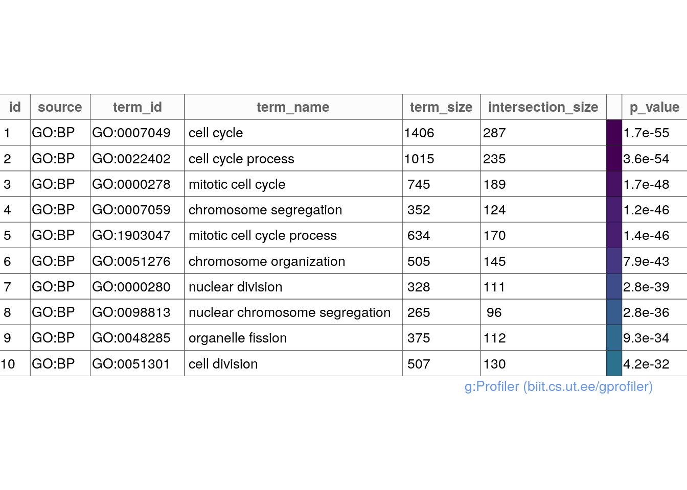

# Set the seed so our results are reproducible:
set.seed(2020)
# Required packages
# pathway analysis
library(gprofiler2)
# We will need them for data handling
library(magrittr)
library(ggrepel)
library(dplyr)
library(tidyverse)
library(readr)
# plotting
library(ggplot2)
library(ComplexHeatmap)
library(RColorBrewer)Gene Ontology (GO) enrichment analysis is a computational method used to identify which biological, cellular, or molecular processes are over-represented (or under-represented) in a given list of genes. It leverages the structured vocabulary of the Gene Ontology to interpret the functions of genes within a larger biological context.
How it works:
Input: You start with a list of genes of interest, often derived from experimental data like differentially expressed genes (DEGs) from a RNA-Seq experiment.
Annotation: Each gene in your list is associated with GO terms that describe its known functions.
Statistical Test: A statistical test (e.g., Fisher’s exact test, hypergeometric test) is applied to determine if any GO terms are enriched in your gene list compared to what would be expected by chance.
Output: The result is a list of GO terms along with their associated p-values (or adjusted p-values). Significantly enriched terms suggest that the biological processes they represent are particularly relevant to your gene list.
The Gene Ontology is organized into three main categories:
Biological Process (BP): Represents a series of events accomplished by one or more ordered assemblies of molecular functions (e.g., DNA replication, cell cycle, signal transduction).
Molecular Function (MF): Describes the elemental activities of a gene product at the molecular level, such as binding or catalysis (e.g., kinase activity, DNA binding, transporter activity).
Cellular Component (CC): Refers to the location relative to cellular structures in which a gene product performs a function (e.g., nucleus, cytoplasm, plasma membrane). Types of GO Enrichment Analysis:
For more information, we encourage further reading at: https://geneontology.org/docs/ontology-documentation/
There are two main approaches to GO enrichment analysis:
Over-Representation Analysis (ORA): This is the simpler method and focuses on identifying GO terms that are significantly over-represented in your gene list. It is based on the assumption that all genes in the list are independent.
Functional Class Scoring (FCS): This approach considers the relative ranking of genes in your list (e.g., based on expression levels) and tests if gene sets associated with specific GO terms are enriched towards the top or bottom of the list. This can reveal subtle patterns that ORA might miss.
The enriched GO terms provide valuable insights into the biological functions that are most relevant to your gene list. This can help generate hypotheses about the underlying mechanisms involved and guide further research.
KEGG is a collection of manually drawn pathway maps representing molecular interaction and reaction networks.
GO and KEGG are the most frequently used for functional analysis. They are typically the first choice because of their long-standing curation and availability for a wide range of species.
Other gene sets include but are not limited to Disease Ontology
DO, Disease Gene Network DisGeNET,
wikiPathways, Molecular Signatures Database
MSigDb.
Transplant_vs_Naive_annotated <- read.csv(file = "./results/Transplant_vs_Naive/Transplant_vs_Naive_annotated_DEGlist.csv",
row.names = 1)
normalized_counts_annotated <- read.csv(file="./results/Transplant_vs_Naive/normalized_counts.csv")For our enrichment analysis, we will use DEGs filtered by the
following cutoff:
adj.P.Val <= 0.05, logFC <= -1 | logFC >= 1.
Transplant_vs_Naive_annotated_DEGs <- Transplant_vs_Naive_annotated %>%
dplyr::filter(str_trim(external_gene_name) != "") %>% # Remove empty strings
dplyr::filter(padj <= 0.05, log2FoldChange <= -1 | log2FoldChange >= 1) %>% # THIS IS FILTERED ANALYSIS
dplyr::arrange(dplyr::desc(abs(log2FoldChange))) %>%
# Filter out the duplicated rows using `dplyr::distinct()`
dplyr::distinct(external_gene_name, .keep_all = TRUE)Quick look at the number of DEGs.
nrow(Transplant_vs_Naive_annotated_DEGs)## [1] 1179Check for duplicated gene_ids
any(duplicated(Transplant_vs_Naive_annotated_DEGs$external_gene_name))## [1] FALSEgprofiler2gprofiler2 performs functional enrichment analysis, also
known as over-representation analysis (ORA) on input gene list. It maps
genes to known functional information sources and detects statistically
significantly enriched terms.
In other words, gprofiler2 takes a list of genes and
analyzes them to see if they are enriched for certain functions. This
can be helpful for understanding the biological processes that the genes
are involved in.
Many GO enrichment analysis tools allow you to archive your results
for future reference or sharing. gprofiler2 maintains
archived versions based on genome versions used for secondary analysis,
specifically Ensembl. Thus, here we also set the archive to Ensembl 109
version.
Archiving results is often optional, but it can be a valuable practice for reproducibility and collaboration.
set_base_url("https://biit.cs.ut.ee/gprofiler_archive3/e109_eg56_p17")Further, note that although gprofiler2 accepts Ensembl
IDs, most biologists/scientist prefer gene names as they are more
interpretable. One caveat, is that the use of gene names can can lead to
redundancies for cases where a name corresponds to more than one id
(e.g: haplotypes). However, for the most part it is acceptable to use
gene names. The example below is executed with gene names.
Lastly, note we set the custom_bg (custom background) to
the gene names present in our normalized counts which is derived from
the raw data that was pre-filtered. This is important due to the
following reasons:
Statistical Significance: The background set defines the domain
of genes from which your input list was derived. By comparing the
frequency of GO terms in your gene list to their frequency in the
background set, gprofiler2 can calculate p-values that
indicate the likelihood of observing such enrichment by chance. Without
a proper background set, these p-values would be unreliable.
Context-Specific Analysis: The choice of background set can dramatically influence the results of your GO analysis. Using the entire genome as the background might not be appropriate if your gene list comes from a specific tissue, cell type, or experimental condition. In such cases, it’s often more meaningful to use a custom background set that reflects the relevant biological context (in our case this corresponds to the total gene number after pre-filtering).
Controlling False Positives: A well-defined background set helps control the false positive rate in your analysis. If your background set is too small or biased, you might detect spurious enrichment of GO terms that are not truly relevant to your gene list.
gprofiler2 offers several options for choosing a
background set: annotated genes, custom background, and predefined
backgrounds.
# select species
species <- "mmusculus"
#select data sources, these are our min. standards:
data_sources <- c("GO", "KEGG", "REAC", "MIRNA", "HP", "HPA", "WP")
gost_results <- gost(query = Transplant_vs_Naive_annotated_DEGs$external_gene_name,
organism = species,
ordered_query = FALSE,
multi_query = FALSE,
significant = TRUE,
exclude_iea = FALSE,
measure_underrepresentation = FALSE,
user_threshold = 0.05,
correction_method = "g_SCS",
domain_scope = "custom",
custom_bg = normalized_counts_annotated$external_gene_name, # genes names from normalized counts
numeric_ns = "",
sources = data_sources,
as_short_link = FALSE,
evcodes = TRUE)Challenge: Enable the url option for gost
explore the gprofiler results in detail through the
url.
gost_results_url <- gost(query = Transplant_vs_Naive_annotated_DEGs$external_gene_name,
organism = species,
ordered_query = FALSE,
multi_query = FALSE,
significant = TRUE,
exclude_iea = FALSE,
measure_underrepresentation = FALSE,
user_threshold = 0.05,
correction_method = "g_SCS",
domain_scope = "custom",
custom_bg = normalized_counts_annotated$external_gene_name, # genes names from normalized counts
numeric_ns = "",
sources = data_sources,
as_short_link = TRUE,
evcodes = TRUE)
gost_results_url## [1] "https://biit.cs.ut.ee/gplink/l/J4xuSIHGQY"gprofiler2 resultsgostplot(gost_results, capped = TRUE, interactive = TRUE)publish_gosttable(gost_results, highlight_terms = gost_results$result[c(1:10),],
use_colors = TRUE,
show_columns = c("source", "term_name", "term_size", "intersection_size"),
filename = NULL)## The input 'highlight_terms' is a data.frame. The column 'term_id' will be used.
Write gprofiler2 results to csv
go_results <- gost_results$result
go_results$parents <- as.character(gost_results$result$parents)write.csv(go_results,
file = "./results/Transplant_vs_Naive/Transplant_vs_Naive_Gprofiler_padj_fc.csv",
row.names = FALSE)sessionInfo()## R version 4.3.3 (2024-02-29)
## Platform: x86_64-pc-linux-gnu (64-bit)
## Running under: Ubuntu 22.04.4 LTS
##
## Matrix products: default
## BLAS: /usr/lib/x86_64-linux-gnu/openblas-pthread/libblas.so.3
## LAPACK: /usr/lib/x86_64-linux-gnu/openblas-pthread/libopenblasp-r0.3.20.so; LAPACK version 3.10.0
##
## locale:
## [1] LC_CTYPE=en_US.UTF-8 LC_NUMERIC=C
## [3] LC_TIME=en_US.UTF-8 LC_COLLATE=en_US.UTF-8
## [5] LC_MONETARY=en_US.UTF-8 LC_MESSAGES=en_US.UTF-8
## [7] LC_PAPER=en_US.UTF-8 LC_NAME=C
## [9] LC_ADDRESS=C LC_TELEPHONE=C
## [11] LC_MEASUREMENT=en_US.UTF-8 LC_IDENTIFICATION=C
##
## time zone: Etc/UTC
## tzcode source: system (glibc)
##
## attached base packages:
## [1] grid stats graphics grDevices utils datasets methods
## [8] base
##
## other attached packages:
## [1] RColorBrewer_1.1-3 ComplexHeatmap_2.18.0 lubridate_1.9.3
## [4] forcats_1.0.0 stringr_1.5.1 purrr_1.0.2
## [7] readr_2.1.5 tidyr_1.3.1 tibble_3.2.1
## [10] tidyverse_2.0.0 dplyr_1.1.4 ggrepel_0.9.5
## [13] ggplot2_3.5.0 magrittr_2.0.3 gprofiler2_0.2.3
##
## loaded via a namespace (and not attached):
## [1] tidyselect_1.2.1 viridisLite_0.4.2 bitops_1.0-7
## [4] fastmap_1.1.1 lazyeval_0.2.2 RCurl_1.98-1.14
## [7] promises_1.3.0 digest_0.6.35 timechange_0.3.0
## [10] mime_0.12 lifecycle_1.0.4 cluster_2.1.6
## [13] compiler_4.3.3 rlang_1.1.3 sass_0.4.9
## [16] tools_4.3.3 utf8_1.2.4 yaml_2.3.8
## [19] data.table_1.15.4 knitr_1.46 htmlwidgets_1.6.4
## [22] withr_3.0.0 BiocGenerics_0.48.1 stats4_4.3.3
## [25] fansi_1.0.6 xtable_1.8-4 colorspace_2.1-0
## [28] scales_1.3.0 iterators_1.0.14 cli_3.6.2
## [31] rmarkdown_2.26 crayon_1.5.2 generics_0.1.3
## [34] rstudioapi_0.16.0 httr_1.4.7 tzdb_0.4.0
## [37] rjson_0.2.21 cachem_1.0.8 parallel_4.3.3
## [40] matrixStats_1.3.0 vctrs_0.6.5 jsonlite_1.8.8
## [43] IRanges_2.36.0 hms_1.1.3 GetoptLong_1.0.5
## [46] S4Vectors_0.40.2 clue_0.3-65 crosstalk_1.2.1
## [49] foreach_1.5.2 plotly_4.10.4 jquerylib_0.1.4
## [52] glue_1.7.0 codetools_0.2-20 stringi_1.8.3
## [55] gtable_0.3.5 shape_1.4.6.1 later_1.3.2
## [58] munsell_0.5.1 pillar_1.9.0 htmltools_0.5.8.1
## [61] circlize_0.4.16 R6_2.5.1 doParallel_1.0.17
## [64] evaluate_0.23 shiny_1.8.1.1 highr_0.10
## [67] png_0.1-8 httpuv_1.6.15 bslib_0.7.0
## [70] Rcpp_1.0.12 gridExtra_2.3 xfun_0.43
## [73] pkgconfig_2.0.3 GlobalOptions_0.1.2